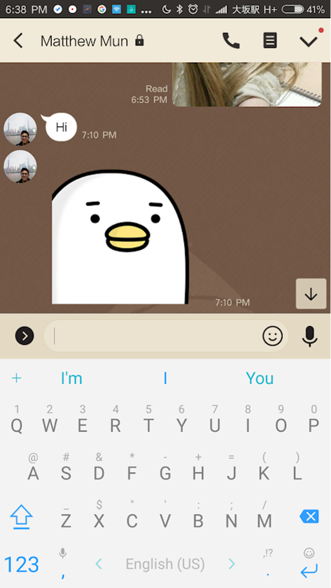
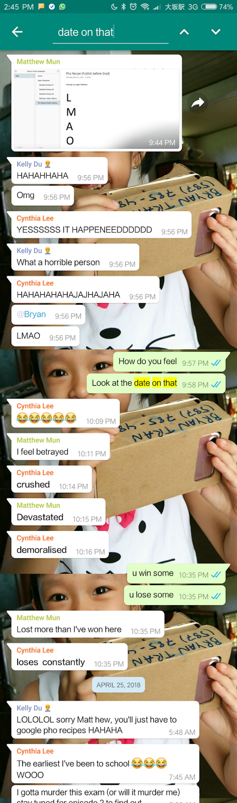

Matthew seldom expresses emotion. In fact, he only has two emotions: happy, and none. In fact, he insists on using common catchphrases that represent neutral emotion, "haha", "dangit man", "hmmm." or even stickers that don't convey emotion. See the figure below.
Figure Caption: A rude awakening during the middle of dinner that literally tells me nothing about his inner thoughts.
It is to my express surprise how much emotion Matthew has shown when teasing him with this recipe and its associated progress
Below is a compilation of events where I've teased him this very recipe.

Figure Caption: He had an Android phone and I knew that the notification would show the first line of a text email so I decided to send an image of text trolling him.
I hosted an online notebook documenting a collection of places I liked when I lived in Japan. See the pho recipe on the left side? That was good bait for Matthew when he asked me where in Japan he should visit. So I gave him this resource while adding in a sneaky OneNote page. And he fell for it gloriously.
Figure Caption: lmao
I mailed something for his birthday the first summer he was in Seattle. It contained most of this document but failed to arrive.
Neither of us know the contents (because I honestly didn’t remember what was inside. It was a lot of work. I regret not documenting this more).
There were other pranks but they were poorly documented.
CONTINUE TO ACTUAL RECIPE.......